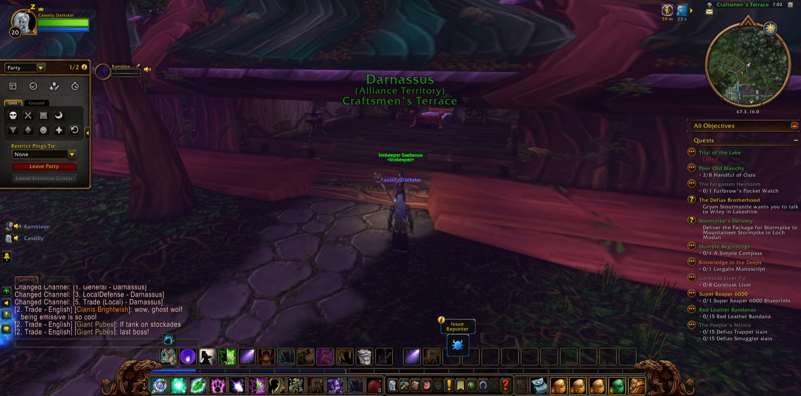
Cassidy Darkstar set out from The High Seat in Ironforge, and there Rambleon the Hunter joined him. They walked the long road together, and that fellowship held from the first step to the last. They passed by The Great Forge and the Vault of Ironforge, through The Mystic Ward, and down into The Forlorn Cavern. There Cassidy saw through the errand called "The Powers Below," a small labour finished beneath the stone of the dwarves. Then he turned homeward, to Darnassus and the Craftsmen's Terrace, where a picture was taken of his coming. There he took up a new charge, "Twilight Falls," and so went down to Rut'theran Village and over The Veiled Sea.
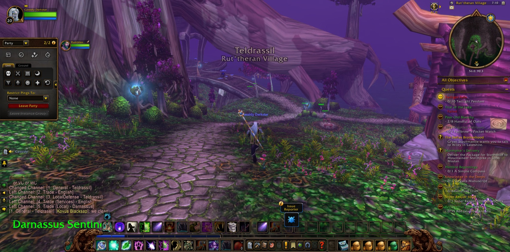
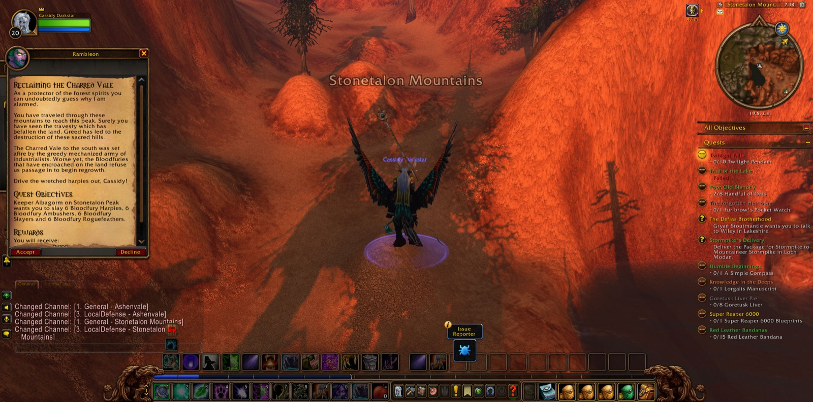
The road ran south and was long. It went by Mist's Edge and Auberdine, The Long Wash and Twilight Shore in Darkshore, and on to The Zoram Strand of Ashenvale. At last it came into the Stonetalon Mountains. There Cassidy accepted the errand "Reclaiming the Charred Vale," and he climbed to Stonetalon Peak and went down again to Mirkfallon Lake. Among the waters and the paths he met the Blackened Basilisks and overcame many of them. Then he went on into The Charred Vale itself.
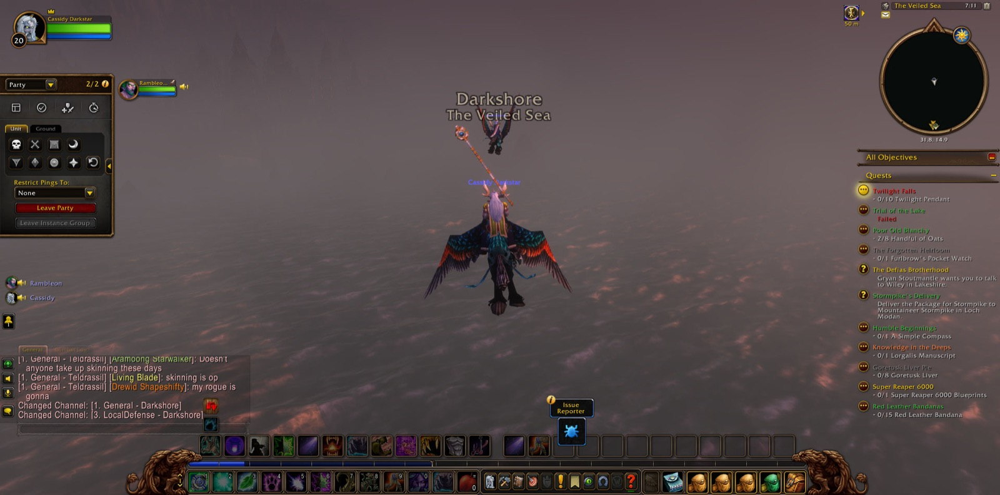
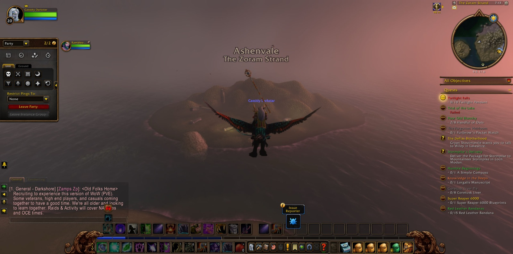
In that Vale the Bloodfury harpies held the ground, and Cassidy went against them. Harpy, Ambusher and Windcaller fell before him, and with them the Rogue Flame Spirits, the Charred Ancients, and a Singed Basilisk. Again and again he stopped to take a picture, as though he wished to keep the place in memory. While he fought there, two other Druids, Arktalis and Falsila, joined the company. They were kinsfolk of his own craft, and they fought beside him for that stretch of the road. Six of the Bloodfury Harpies were slain as the errand asked, and the task he had come for was done. The Vale did not yield cheaply, and he fell there more than once. Yet each time he came back up the Webwinder Path and took up the work again.
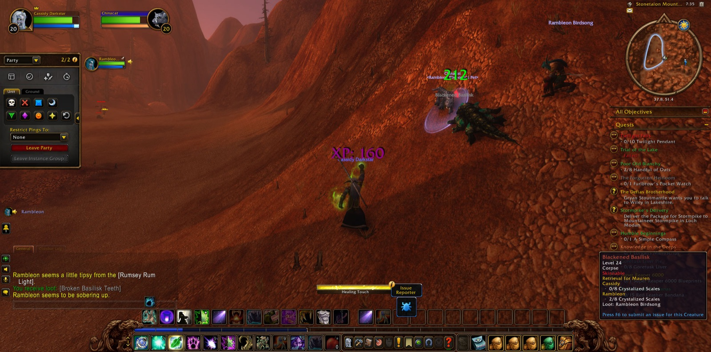
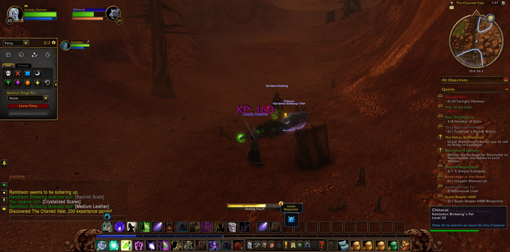
When the labour was ended, Cassidy returned to Darnassus. There he parted with courtesy from Arktalis and Falsila, while Rambleon remained at his side. He went through Warrior's Terrace and Tradesmen's Terrace to the Cenarion Enclave. There he took up "The Great Cat Spirit," an errand of his own order, and it led him to Nighthaven in Moonglade, where another picture was taken. In that place the errand was fulfilled, and taken up anew, and fulfilled again. Two more charges were laid upon him as well: "Trial of the Lake" and "The Principal Source." He walked the shores of Lake Elune'ara and went down into the Stormrage Barrow Dens. Afterwards he came again to the lake's edge, and there the tale of this stretch of road rests. The Great Cat Spirit was still waiting to be sought, and the lake and its trial still lay before him.
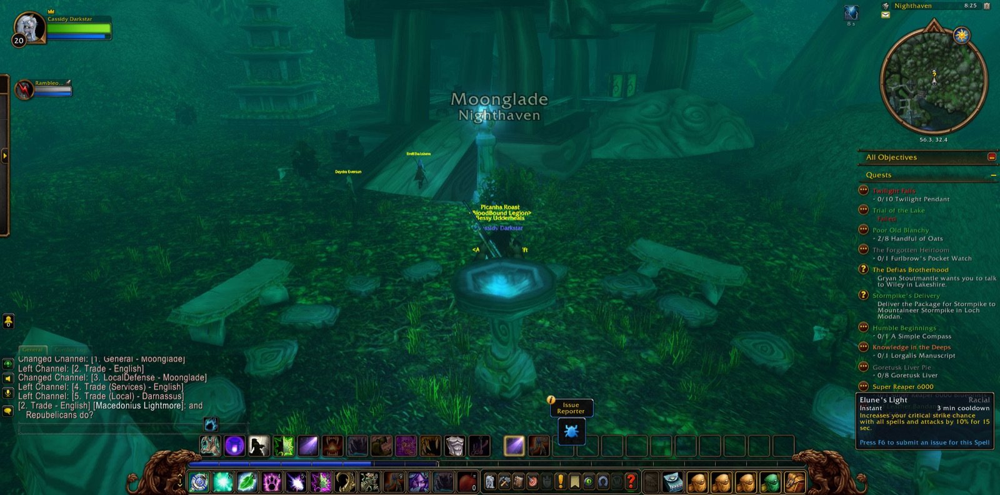
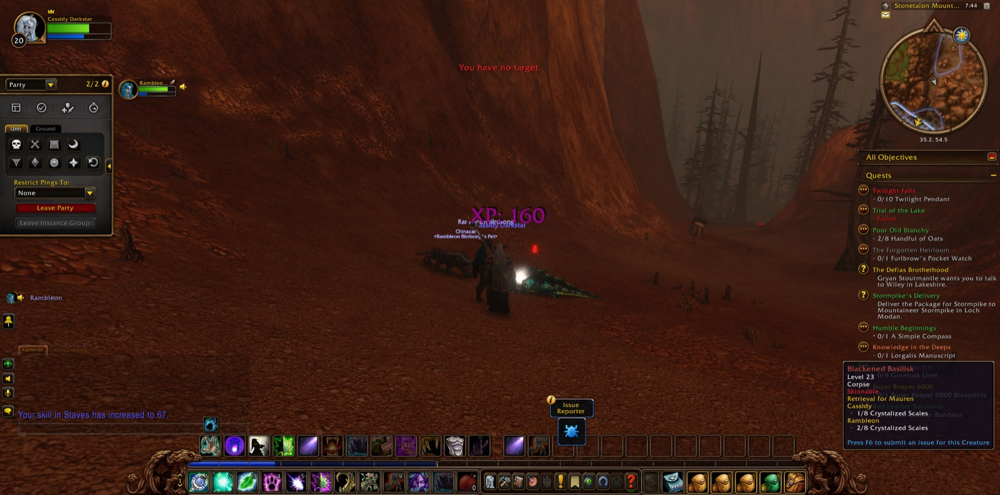
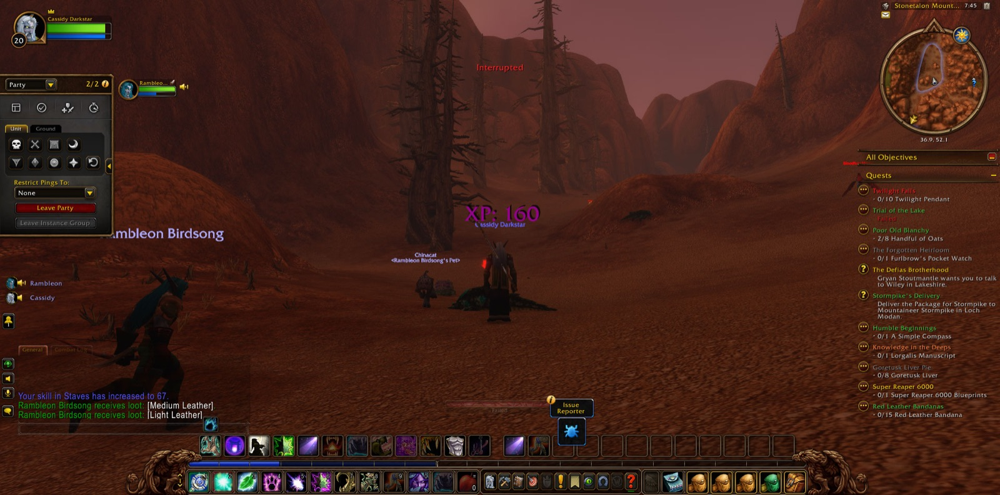
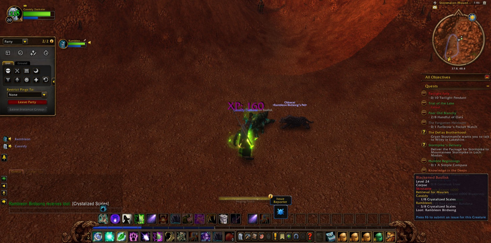
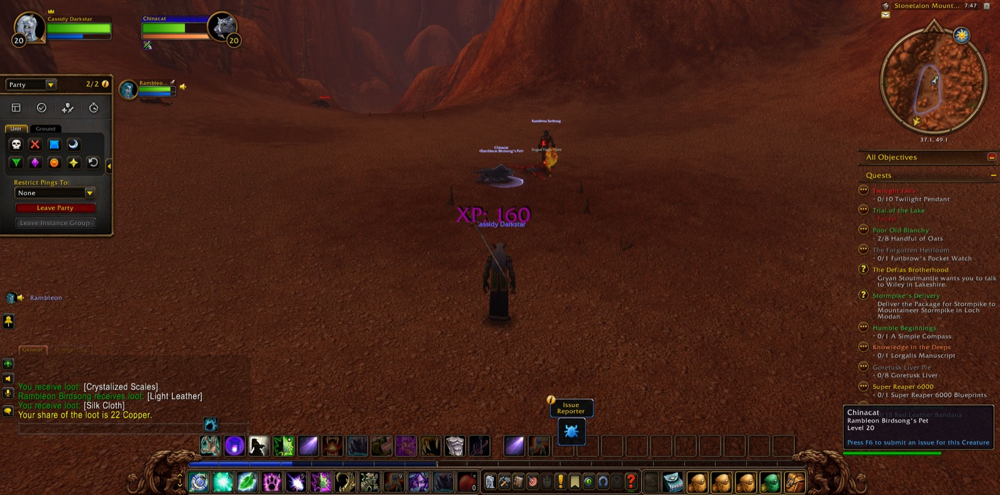
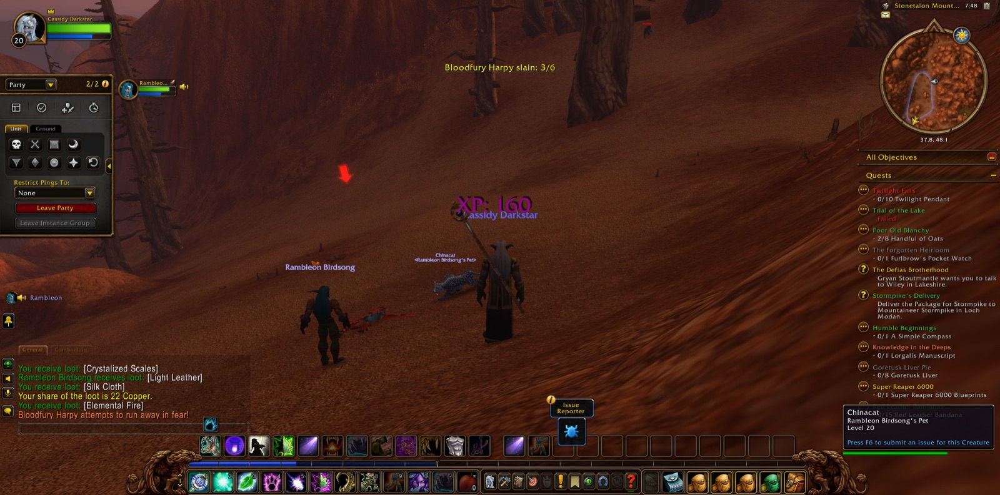
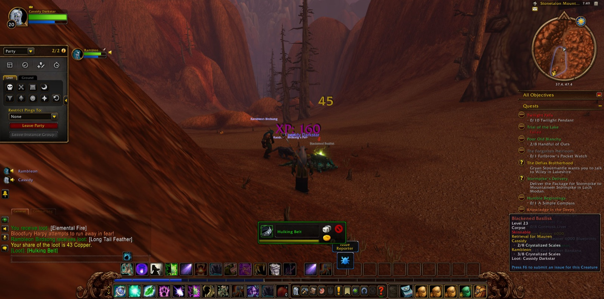